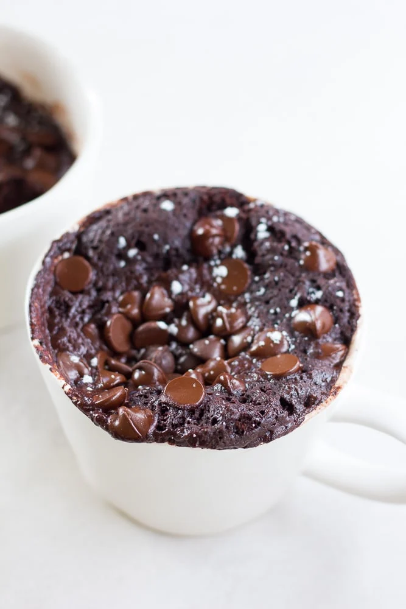

Vegan Chocolate Mug Cake

This chocolate mug cake recipe from
Nora Cooks Vegan is perfect for when you have a dessert craving but don't want to bake a whole cake.
Ingredients
- 2 tbsp all purpose flour
- 2 tbsp cocoa powder
- 2 tbsp granulated sugar
- 1/8 tsp salt
- 1/4 tsp baking powder
- 1 tbsp canola oil
- 3 tbsp non-dairy milk
- 1/2 tsp vanilla extract
- 2 tbsp dairy-free chocolate chips
Steps
- Add the flour, cocoa powder, sugar, salt and baking powder to a mug. Stir or whisk to combine.
- Pour in the oil, non-dairy milk and vanilla into the mug with the dry ingredients and stir well with a spoon. Sprinkle the chocolate chips on top.
- Cook in the microwave for 40 seconds. It will likely be a little undercooked in the middle at this point, which is my preference, but if you want it cooked more, microwave it another 10-20 seconds.
- Serve immediately.